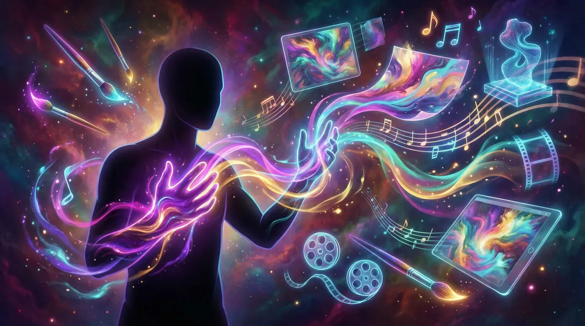

TRILHA 1 - PARTE 1: ARTE
🎨 Do Talento à Expressêo Total
Use a IA como ferramenta de expressêo criativa. Artista é quem imagina e comunica, nêo quem domina técnica motora.

5
Módulos
50
Tópicos
Parte 1
de 2
~5h
Conteúdo
1.1
A Nova Definiçêo de Artista na Era da IA
Redefinindo o papel do artista na era digital
1.2
Traduzindo a Intençêo em Prompts Efetivos
Aprender a comunicar ideias criativas para a IA
1.3
Criaçêo Multimídia Sem Barreiras Técnicas
Produzir música, cARCKHÉ e arte sem conhecimento técnico
1.5
Narrativas Visuais e Storytelling Generativo
Contar histórias através de imagens e vídeos